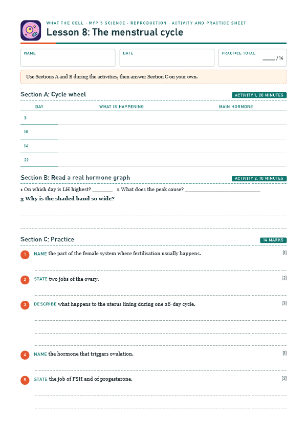

By the end of the lesson you can
- Identify the parts of the female reproductive system and their jobs
- Describe the stages of the menstrual cycle
- State the roles of FSH, LH, oestrogen and progesterone
- Interpret a graph of hormone levels
Keys: arrows or a presentation clicker move the slides, F for full screen. Slides with a red dot have a video or simulation.
Videos (all 5 minutes or less)
- 3:47
What is the menstrual cycle?
FuseSchool. While you watch: What happens to the lining in the first five days? Slide 8.
- 4:12
How menstruation works
TED-Ed. While you watch: What does the corpus luteum make? Slide 11.
Simulations
- Lab
Print and practise

Activity and practice sheet
Used in the lesson’s activities, with practice questions. Your teacher has the answers.
Download (PDF)Lesson 8 slides
All 22 slides in one file, to read again or print. The video buttons on the slides open YouTube.
Download the slides (PDF)Revising? The Revision tab on the unit page has the unit notes and review.
Notes: The menstrual cycle
uterus
A hollow, muscular organ about the size of a pear, where a baby develops. For example: the womb.
endometrium
The lining of the uterus; it thickens each month, ready for an embryo.
follicle
A small fluid-filled sac in the ovary that holds one developing egg. For example: the large space in the photo.
ovulation
The release of a mature egg from a follicle in the ovary. For example: about once a month.
corpus luteum
What is left of the follicle after ovulation; it makes progesterone.
menstruation
The lining of the uterus breaking down and leaving the body: the period. For example: about 3–7 days.
Key words
| ovary | stores eggs and makes oestrogen and progesterone |
|---|---|
| follicle | sac in the ovary holding a developing egg |
| oviduct | tube from ovary to uterus; fertilisation happens here |
| uterus / endometrium | muscular organ where a baby grows / its lining |
| ovulation | release of an egg from the ovary |
| menstruation | the lining of the uterus breaking down and leaving the body |
| FSH, LH | pituitary hormones: egg matures / ovulation |
| oestrogen, progesterone | ovary hormones: lining rebuilds / lining kept |